跨端全流程：admin 建系统 MCP → web 查看 → web 自建/编辑/删除 → admin 编辑/删除，每步 UI 截图。
admin 端走完整 3 步向导，把「GitHub Ops」这条系统 MCP 从零建到落库并出现在管理列表中。
admin 空态PASS
清库后进入「系统 MCP」页，空态文案与新建 CTA 就位。
打开向导 · Step 1 空态PASS
Steps 头「基本信息 → 接入配置 → 文档说明」，Step 1 字段：图标预览 + 名称* + 图标 emoji/URL + 服务标识 slug + 分类 + 标签 + 简介。
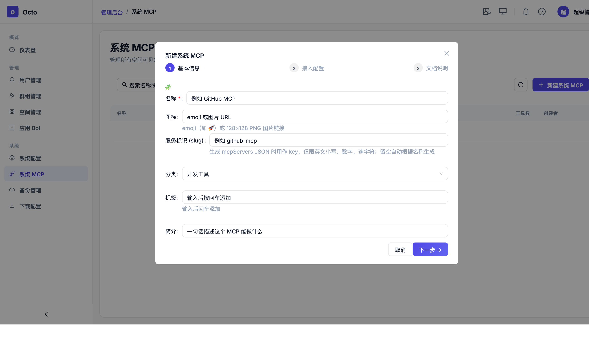
Step 1 填字段 · slug 自动生成PASS
填写：名称=GitHub Ops、图标=🐙、标签=开发工具（回车 pill）、简介=通过 GitHub API…。slug 自动派生 github-ops。
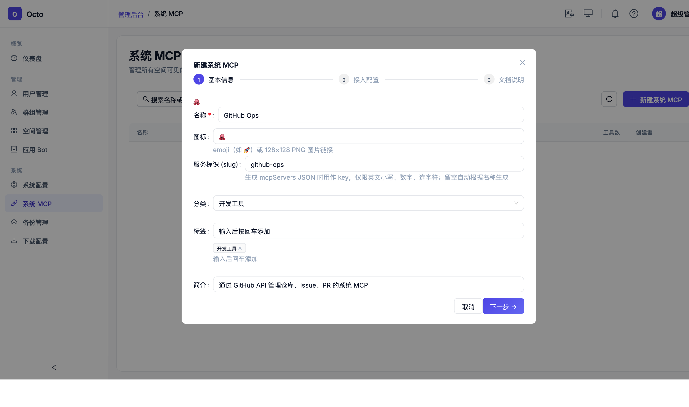
Step 2 · 接入配置 + 工具清单PASS
传输方式=远程 HTTP，URL=https://api.github.com/mcp，认证=无。工具清单加 2 条：list_repos、create_issue。
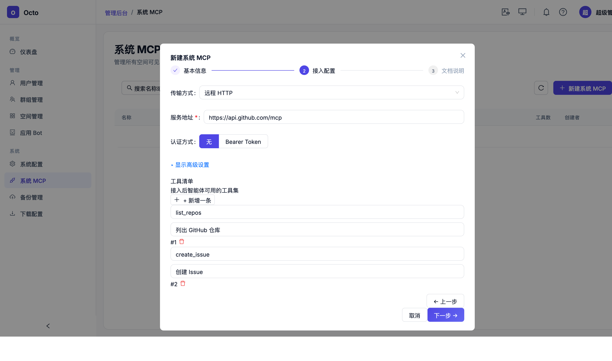
Step 3 · 文档说明（system 无可见范围）PASS
3 个可选段：使用示例 / 常见问题 / 注意事项。system MCP 强制 visibility=system，故不展示公开/仅自己选项。
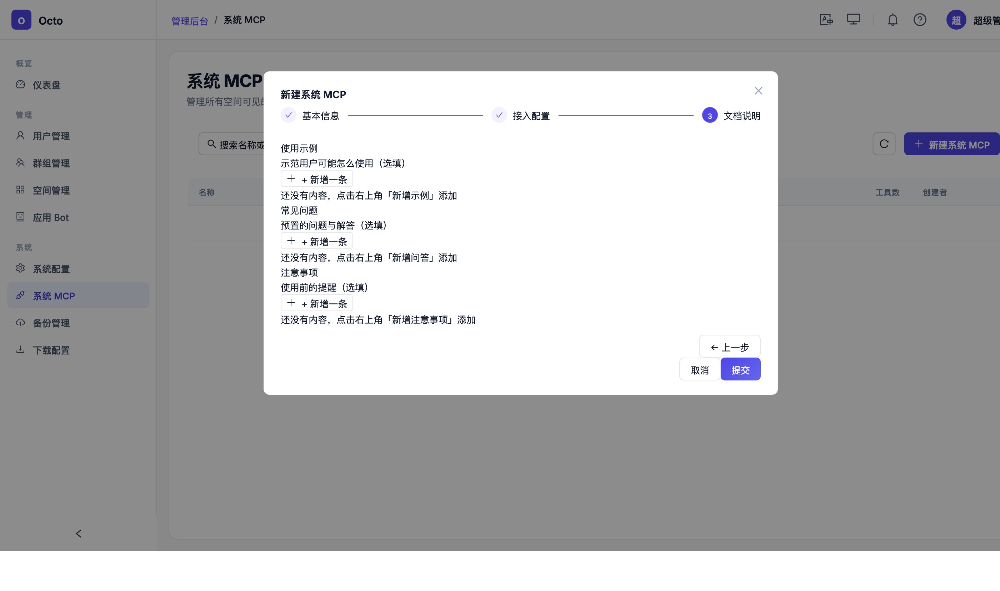
提交 · 记录出现在列表PASS
点击「提交」→ Toast「已创建」→ Modal 关闭 → 列表新增一行。
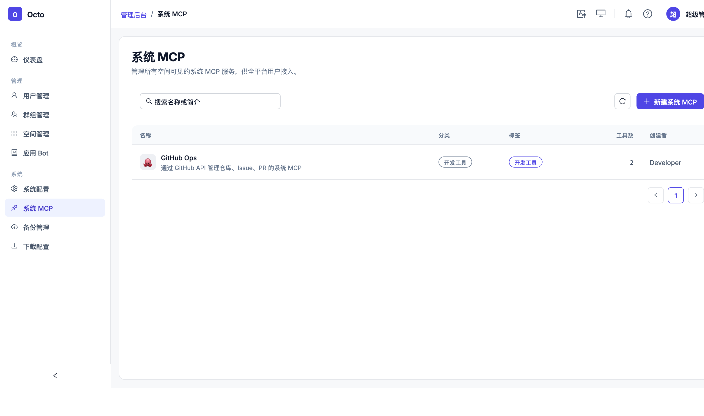
GitHub Ops + 副标题 + 分类「开发工具」pill + 标签 pill + 工具数=2 + 创建者=Developer；DB 里 visibility=system。切换到 octo-web MCP 市场，验证 admin 端建立的系统 MCP 对普通用户可见。
web 全部 tab 展示系统 MCPPASS
用户 Nancy 进入 MCP 市场，全部 tab 展示 1 条：GitHub Ops（admin 刚建的）。
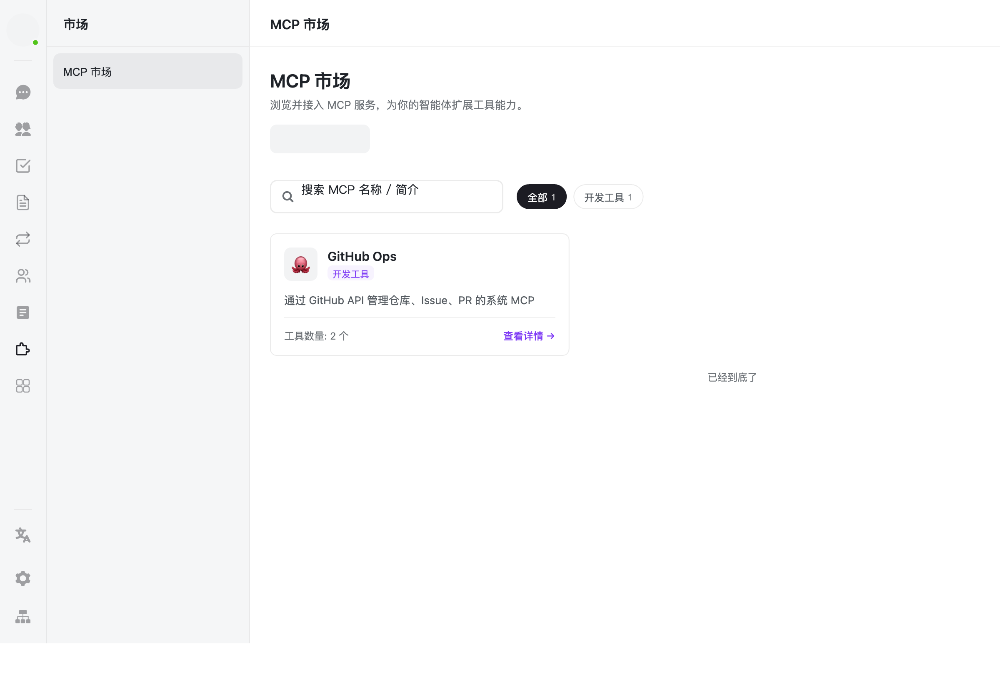
web 打开系统 MCP 详情PASS
点击卡片 → 详情弹窗，展示快速接入模板、创建者信息、工具清单。
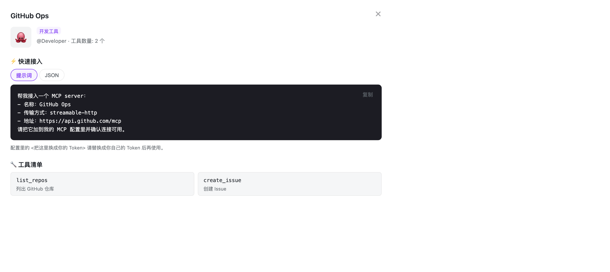
@Developer、快速接入代码块（含 name/transport/url）、Copy 按钮、工具清单段全部渲染。非 owner 用户看不到编辑/删除。Nancy 在自己账号下新建一条 MCP。走 web 的 3 步向导（与 admin 结构一致）。
Step 1 填名字PASS
名称=My Note Taking。web 与 admin 同款 3 步向导。
走完 Step 2/3 提交 · 列表出现新记录PASS
填 URL https://note.example.com/mcp，提交。Toast「创建成功」（BUG-01 fix 后不再是「（Mock）」）。
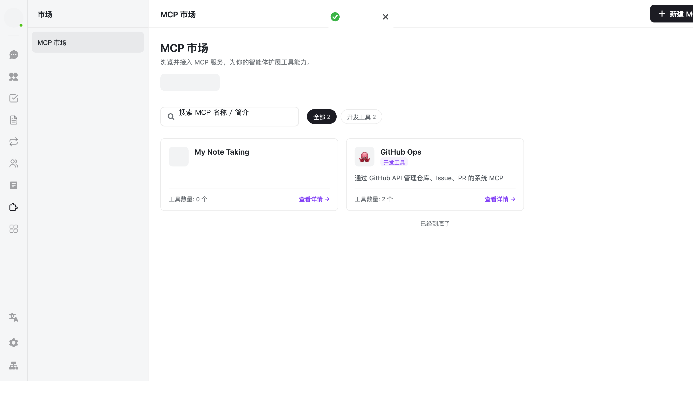
切「我的」tab，打开自建 MCP 详情，编辑名称并保存。验证 owner-only 权限 + 向导 hydrate 完整性。
「我的」tab · 详情显示编辑/删除PASS
从「我的」tab 打开 My Note Taking → 详情右下角出现「删除」+「编辑」按钮（canManage = mode==='mine'）。
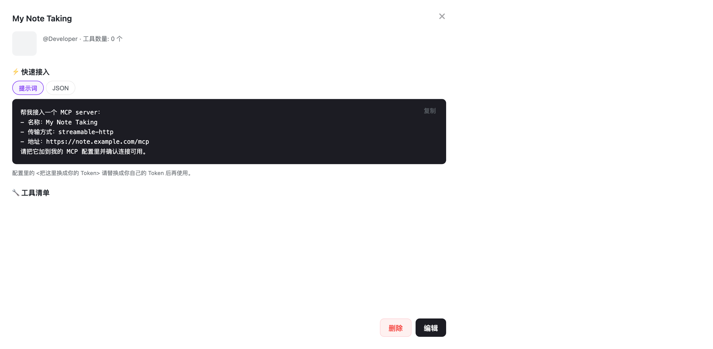
编辑向导 · Step 1 字段完整 hydratePASS
点编辑 → 向导打开，Step 1 名称字段预填「My Note Taking」，修改为「My Note Taking (renamed)」。
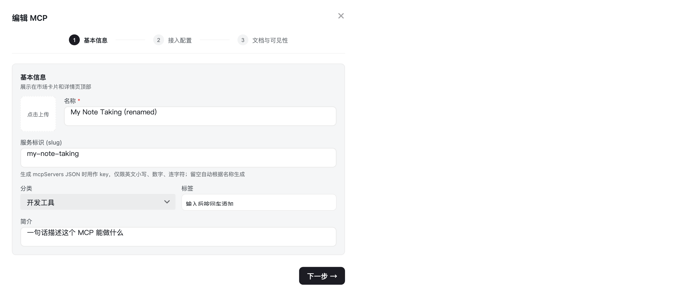
保存 · 列表卡片刷新PASS
Step 3 提交 → Toast「已保存」→ Modal 关 → 列表卡片名字变成「My Note Taking (renamed)」。
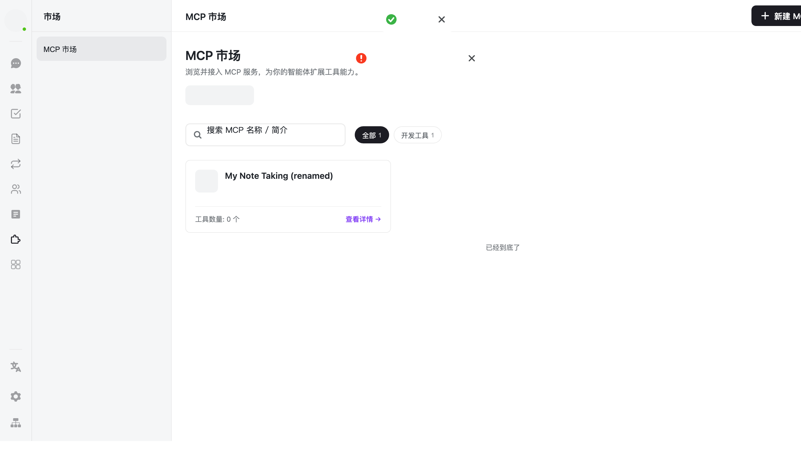
详情内联删除确认PASS
在详情内点「删除」→ 内联展开 [取消][确认删除] 二次确认，无系统 confirm 弹窗。
确认后列表刷新 · 我的 tab 变空PASS
点确认 → Toast「已删除」→ Modal 关 → 我的 tab 变空态。
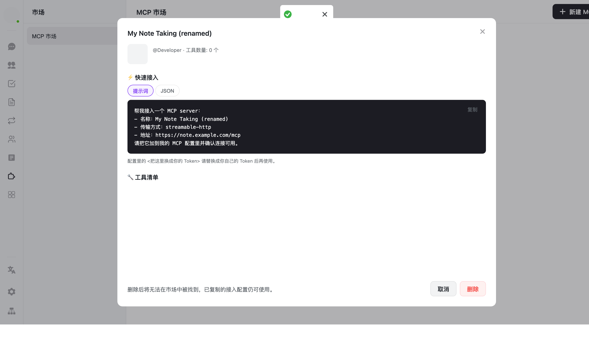
回到 admin 端，编辑 GitHub Ops 名称并保存，然后删除。验证跨端一致的 CRUD。
编辑向导 · 字段完整 hydratePASS
admin 点行 → Drawer → 编辑 → 向导 Step 1 预填 GitHub Ops → 修改名称为「GitHub Ops (更新版)」。BUG-04（旧版 antd Form hydrate 时序）在重写后天生消失。
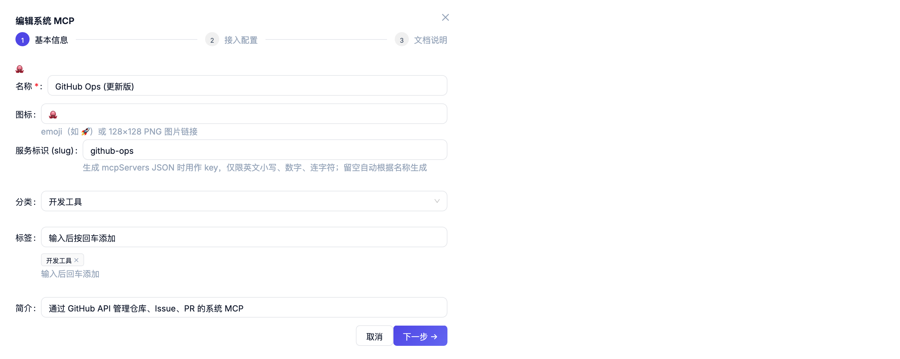
Drawer 内联删除确认PASS
保存后回列表 → 再点行 → Drawer 删除 → 内联「取消 / 确认删除」。
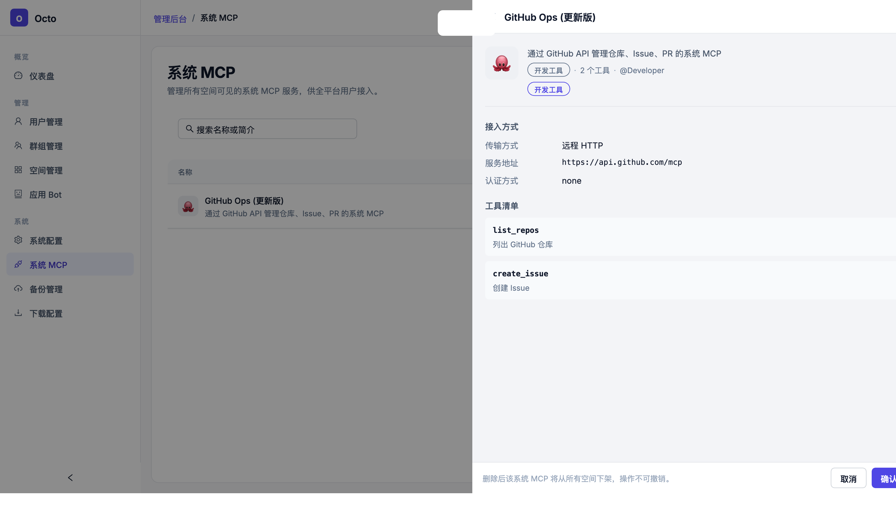
确认后列表变空PASS
确认删除 → Toast「已删除」→ Drawer 关 → 列表空态。
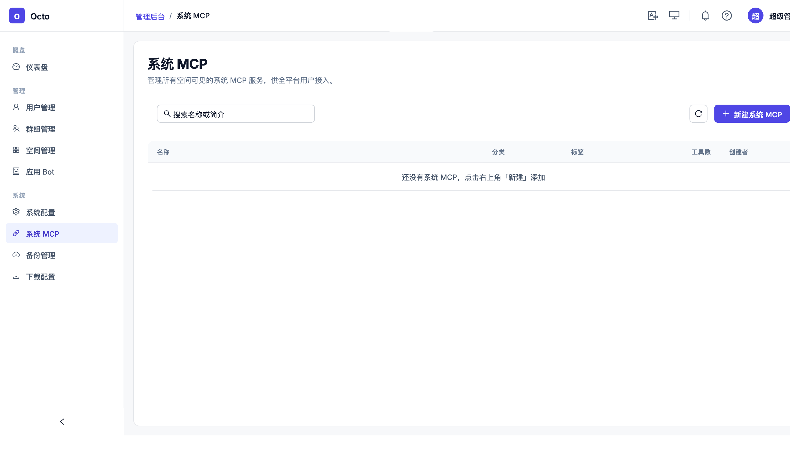
WHERE visibility='system' AND deleted_at IS NULL 结果 0。| Scenario | 步数 | Pass | Fail | 关键验证 |
|---|---|---|---|---|
| A · admin 建系统 MCP | 6 | 6 | 0 | 3 步向导 + slug 自动派生 + 动态工具清单 + visibility=system 强制 |
| B · web 看到 admin 建的 | 2 | 2 | 0 | 跨端可见 + 非 owner 无编辑/删除按钮 |
| C · web 自建 MCP | 2 | 2 | 0 | Toast「创建成功」（BUG-01 fix 生效）+ 系统 + 用户混合列表 |
| D · web 编辑 | 3 | 3 | 0 | 「我的」tab 展 edit/delete 按钮 + 向导 hydrate 完整 |
| E · web 删除 | 2 | 2 | 0 | 内联二次确认 + 我的空态但系统 MCP 未受影响 |
| F · admin 编辑并删除 | 3 | 3 | 0 | BUG-04 hydrate 修复生效 + 交互与 web 端一致 |
| 合计 | 18 | 18 | 0 |
mcp.create.success 遗留「（Mock）」→ 已改「创建成功」R5 确认octo-admin/src/auth/capabilities.ts: mcp.read/mcp.write 临时旁路（后端未下发 capability）octo-marketplace/scripts/restart-api.sh: DEV_AUTH_UID = Nancy 的真实 uid（本地测试需要，让 web 端 owner 检查通过）
提示：点击任一截图放大查看。所有截图存放于 docs/test-plans/e2e-screenshots/，通过 html2canvas 从真实浏览器 DOM 抓取。